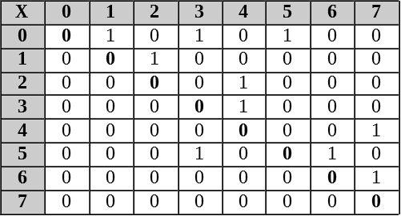
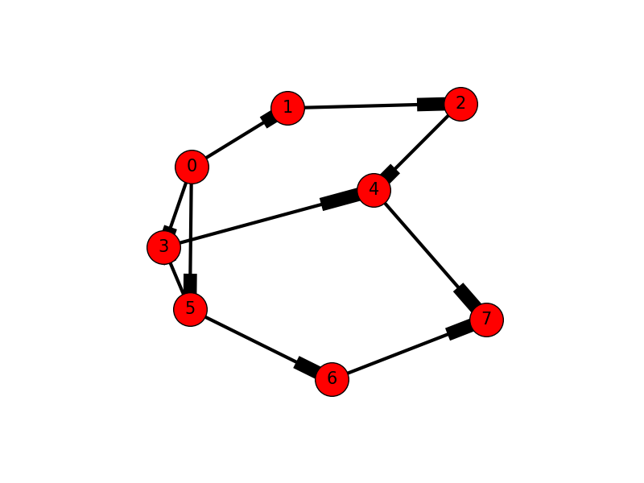

Graph as adjacency matrix
We can construct an adjacency matrix to see which vertices are adjacent. Intersections in the matrix may be assigned 0 or 1 (true of false) for unweighted graphs or have other values if weighted.
An adjacency matrix can be constructed using a multi-dimensional array or parallel lists. An algorithms with a nested loop allows iteration over all possible vertex pairs.
The following pseudo code counts the number of edges for an undirected adjacent matrix:
for i 0 to n :
for j 0 to m :
if pair[i][j] != pair[j][i] :
count = count + 1
Since the adjacency matrix is symmetric about the diagonal, neither the diagonal nor values above the diagonal are counted. Hence, for an undirected adjacent matrix,
total number of possible edges = n * (n - 1) / 2
For a directed graph, entries are only made in the adjacency matrix if direction to a vertex exists. For example, consider the following adjacency matrix for the directed graph on the right. As you can see, the pair (1, 2) has and entry of 0 while the pair (2, 1) has an entry of 1. Because of the direction from vertex 1 to vertex 2, vertex 2 is adjacent to vertex 1 and vertex 1 is not adjacent to vertex 2.
 
The total possible edges for this graph is: 8 * (8 – 1) / 2 == 56 / 2 == 28. However, the directional edges indicate just 10 neighbors. Stated differently, the connections of a directed graph have a head and a tail, whereby only the heads are counted.
Exercise
- Write a function in Python to generate an adjacency matrix from a list of of vertex pairs.
- Write a function in Python to determine if a graph is directed or undirected.
Submit your code and your tested output.